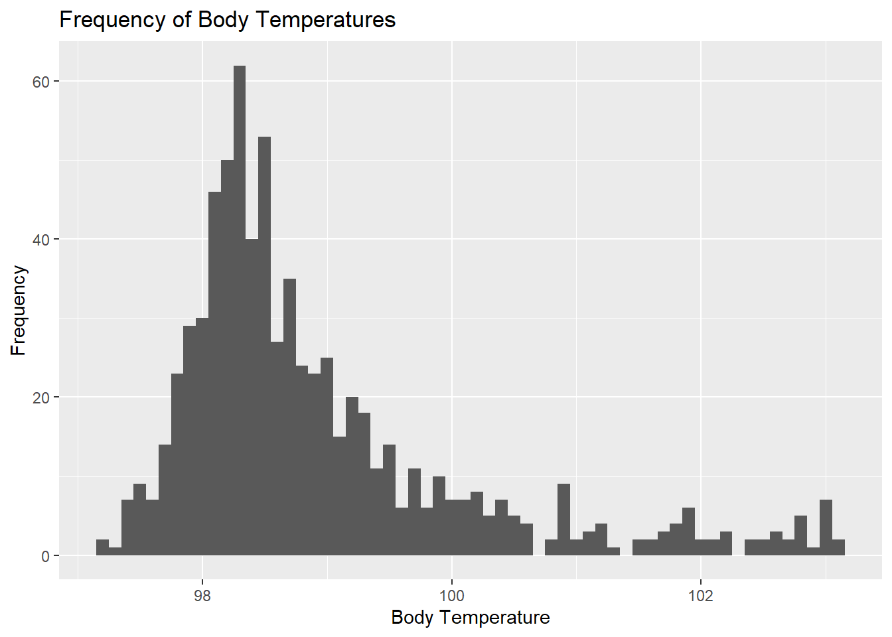
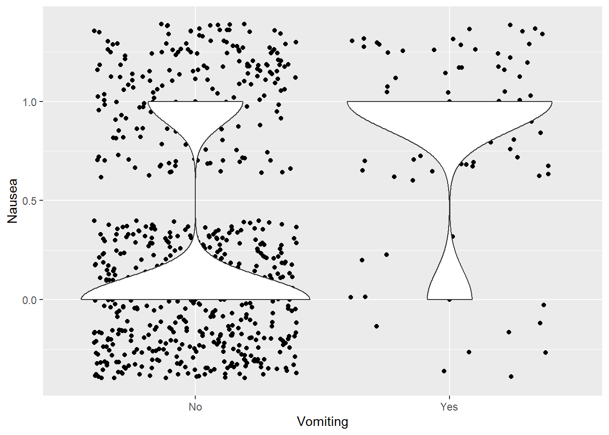
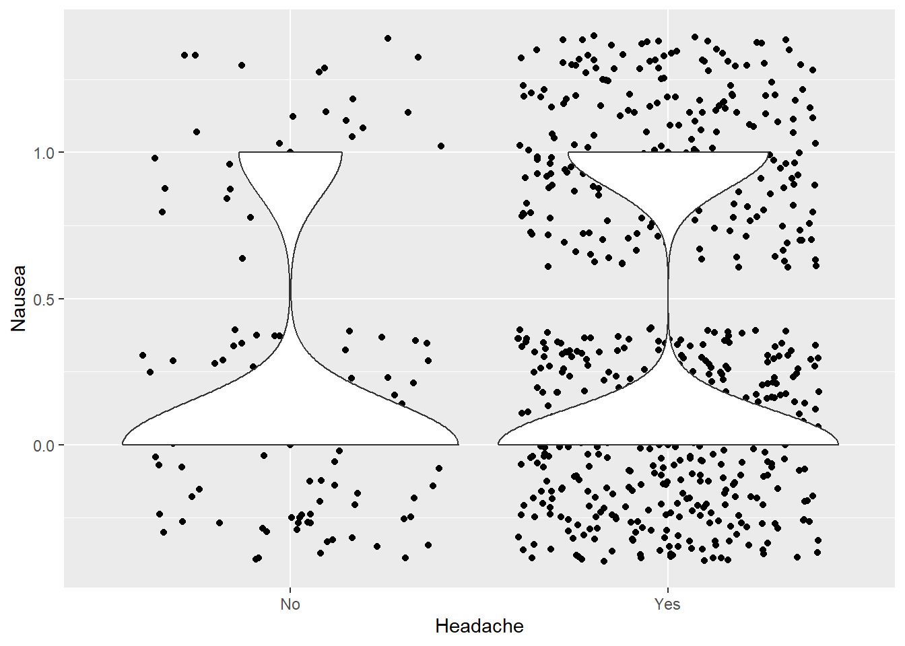
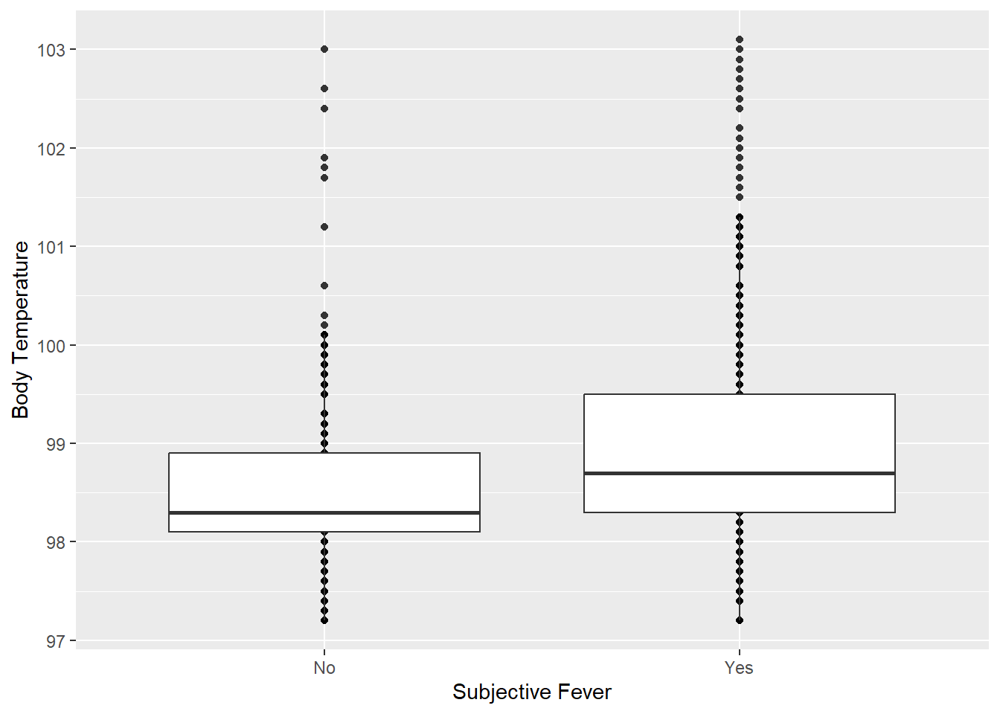
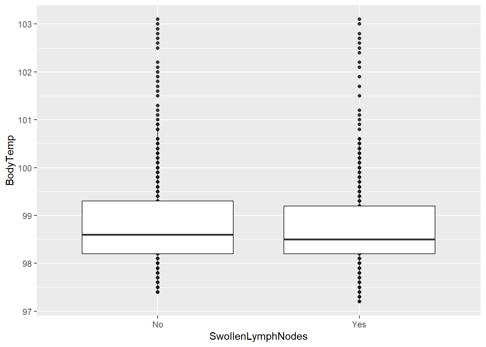
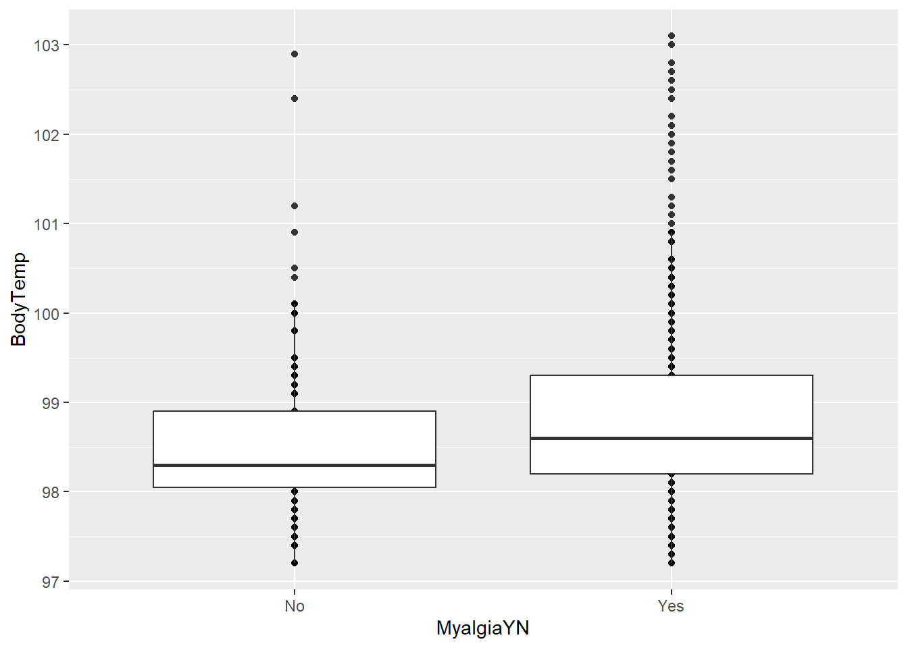
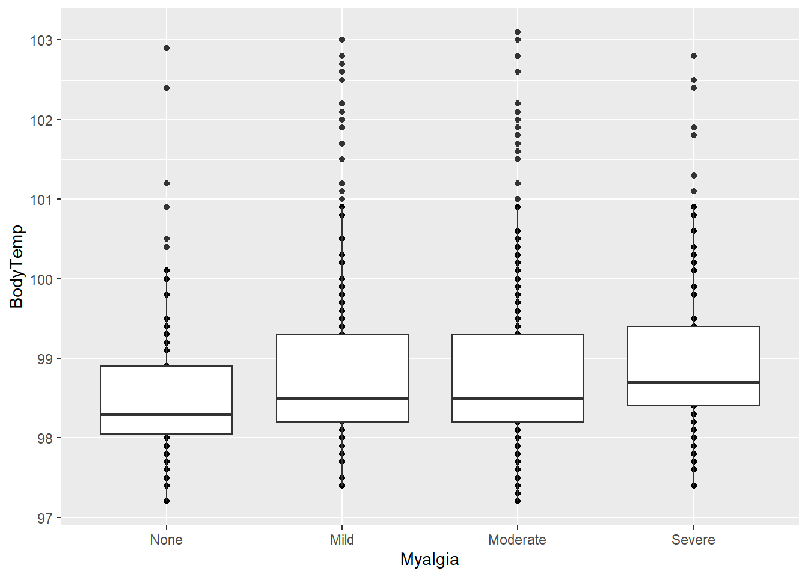

# Pathing
data_path <- here("fluanalysis", "data", "cleaned_data.rds")
# Data Importation
clean_data <- readRDS(data_path)Module 8 Exercise - Fitting Basic Statistical Models: Part 2
Setup
Tidyverse will be used for graphing in addition to handling data processing/manipulation, and the here package assists in pathing. The gtsummary package will be used to create descriptive summary tables.
Load Required R Packages
Load Cleaned Data
Exploratory Data Analysis
To get a greater sense of the dataset’s structure, I’ll run the str() command and determine which variables of interest are numeric and/or continuous.
Data Structure
str(clean_data)'data.frame': 730 obs. of 32 variables:
$ SwollenLymphNodes: Factor w/ 2 levels "No","Yes": 2 2 2 2 2 1 1 1 2 1 ...
..- attr(*, "label")= chr "Swollen Lymph Nodes"
$ ChestCongestion : Factor w/ 2 levels "No","Yes": 1 2 2 2 1 1 1 2 2 2 ...
..- attr(*, "label")= chr "Chest Congestion"
$ ChillsSweats : Factor w/ 2 levels "No","Yes": 1 1 2 2 2 2 2 2 2 1 ...
..- attr(*, "label")= chr "Chills/Sweats"
$ NasalCongestion : Factor w/ 2 levels "No","Yes": 1 2 2 2 1 1 1 2 2 2 ...
..- attr(*, "label")= chr "Nasal Congestion"
$ CoughYN : Factor w/ 2 levels "No","Yes": 2 2 1 2 1 2 2 2 2 2 ...
..- attr(*, "label")= chr "Cough"
$ Sneeze : Factor w/ 2 levels "No","Yes": 1 1 2 2 1 2 1 2 1 1 ...
..- attr(*, "label")= chr "Sneeze"
$ Fatigue : Factor w/ 2 levels "No","Yes": 2 2 2 2 2 2 2 2 2 2 ...
..- attr(*, "label")= chr "Fatigue"
$ SubjectiveFever : Factor w/ 2 levels "No","Yes": 2 2 2 2 2 2 2 2 2 1 ...
..- attr(*, "label")= chr "Subjective Fever"
$ Headache : Factor w/ 2 levels "No","Yes": 2 2 2 2 2 2 1 2 2 2 ...
..- attr(*, "label")= chr "Headache"
$ Weakness : Factor w/ 4 levels "None","Mild",..: 2 4 4 4 3 3 2 4 3 3 ...
$ WeaknessYN : Factor w/ 2 levels "No","Yes": 2 2 2 2 2 2 2 2 2 2 ...
..- attr(*, "label")= chr "Weakness"
$ CoughIntensity : Factor w/ 4 levels "None","Mild",..: 4 4 2 3 1 3 4 3 3 3 ...
..- attr(*, "label")= chr "Cough Severity"
$ CoughYN2 : Factor w/ 2 levels "No","Yes": 2 2 2 2 1 2 2 2 2 2 ...
$ Myalgia : Factor w/ 4 levels "None","Mild",..: 2 4 4 4 2 3 2 4 3 2 ...
$ MyalgiaYN : Factor w/ 2 levels "No","Yes": 2 2 2 2 2 2 2 2 2 2 ...
..- attr(*, "label")= chr "Myalgia"
$ RunnyNose : Factor w/ 2 levels "No","Yes": 1 1 2 2 1 1 2 2 2 2 ...
..- attr(*, "label")= chr "Runny Nose"
$ AbPain : Factor w/ 2 levels "No","Yes": 1 1 2 1 1 1 1 1 1 1 ...
..- attr(*, "label")= chr "Abdominal Pain"
$ ChestPain : Factor w/ 2 levels "No","Yes": 1 1 2 1 1 2 2 1 1 1 ...
..- attr(*, "label")= chr "Chest Pain"
$ Diarrhea : Factor w/ 2 levels "No","Yes": 1 1 1 1 1 2 1 1 1 1 ...
$ EyePn : Factor w/ 2 levels "No","Yes": 1 1 1 1 2 1 1 1 1 1 ...
..- attr(*, "label")= chr "Eye Pain"
$ Insomnia : Factor w/ 2 levels "No","Yes": 1 1 2 2 2 1 1 2 2 2 ...
..- attr(*, "label")= chr "Sleeplessness"
$ ItchyEye : Factor w/ 2 levels "No","Yes": 1 1 1 1 1 1 1 1 1 1 ...
..- attr(*, "label")= chr "Itchy Eyes"
$ Nausea : Factor w/ 2 levels "No","Yes": 1 1 2 2 2 2 1 1 2 2 ...
$ EarPn : Factor w/ 2 levels "No","Yes": 1 2 1 2 1 1 1 1 1 1 ...
..- attr(*, "label")= chr "Ear Pain"
$ Hearing : Factor w/ 2 levels "No","Yes": 1 2 1 1 1 1 1 1 1 1 ...
..- attr(*, "label")= chr "Loss of Hearing"
$ Pharyngitis : Factor w/ 2 levels "No","Yes": 2 2 2 2 2 2 2 1 1 1 ...
..- attr(*, "label")= chr "Sore Throat"
$ Breathless : Factor w/ 2 levels "No","Yes": 1 1 2 1 1 2 1 1 1 2 ...
..- attr(*, "label")= chr "Breathlessness"
$ ToothPn : Factor w/ 2 levels "No","Yes": 1 1 2 1 1 1 1 1 2 1 ...
..- attr(*, "label")= chr "Tooth Pain"
$ Vision : Factor w/ 2 levels "No","Yes": 1 1 1 1 1 1 1 1 1 1 ...
..- attr(*, "label")= chr "Blurred Vision"
$ Vomit : Factor w/ 2 levels "No","Yes": 1 1 1 1 1 1 2 1 1 1 ...
..- attr(*, "label")= chr "Vomiting"
$ Wheeze : Factor w/ 2 levels "No","Yes": 1 1 1 2 1 2 1 1 1 1 ...
..- attr(*, "label")= chr "Wheezing"
$ BodyTemp : num 98.3 100.4 100.8 98.8 100.5 ...It appears that there is only one numeric/continuous variable: BodyTemp. BodyTemp will also serve as the main continuous outcome of interest, and Nausea will serve as the main categorical outcome.
Other important variables of interest (that may be associated with these outcomes) include:
- SwollenLymphNodes
- ChillsSweats
- SubjectiveFever
- Headache
- Myalgia(Y/N)
- EarPn
- Vomit
Categorical Variables: Nausea, SwollenLymphNodes, ChillsSweats, SubjectiveFever, Headache, MyalgiaYN, Myalgia, EarPn, Vomit
Since these categorical variables are just Y/N, the number of yes/no’s will be presented in a table for each.
Nausea - Main Categorical Outcome
# Table
rmarkdown::paged_table(clean_data %>% group_by(Nausea) %>% count())Swollen Lymph Nodes
rmarkdown::paged_table(clean_data %>% group_by(SwollenLymphNodes) %>% count())Chills/Sweats
rmarkdown::paged_table(clean_data %>% group_by(ChillsSweats) %>% count())Subjective Fever
rmarkdown::paged_table(clean_data %>% group_by(SubjectiveFever) %>% count())Headache
rmarkdown::paged_table(clean_data %>% group_by(Headache) %>% count())Myalgia
# Y/N
rmarkdown::paged_table(clean_data %>% group_by(MyalgiaYN) %>% count())# None, Mild, Moderate, Severe
rmarkdown::paged_table(clean_data %>% group_by(Myalgia) %>% count())Ear Pain
rmarkdown::paged_table(clean_data %>% group_by(EarPn) %>% count())Vomit
rmarkdown::paged_table(clean_data %>% group_by(Vomit) %>% count())Continuous Variables: BodyTemp
Body Temperature - Main Continuous Outcome
## Summary Table
Body_Temp_Summary <- do.call(cbind, lapply(
clean_data %>% select(BodyTemp), summary))
Body_Temp_Summary <- data.frame(Body_Temp_Summary)
rmarkdown::paged_table(Body_Temp_Summary)## Histogram
ggplot(clean_data, aes(x = BodyTemp)) +
geom_histogram(binwidth = 0.1) +
labs(x = "Body Temperature", y = "Frequency",
title = "Frequency of Body Temperatures")
Data Visualization: Predictors and Outcomes
Selected Predictors for Outcome of Nausea: Headache, EarPn, Vomit
Selected Predictors for Outcome of Body Temperature: SwollenLymphNodes, SubjectiveFever, MyalgiaYN, Myalgia, ChillsSweats
Since it is difficult to represent categorical variables as themselves instead of numeric, I have decided to plot the Nausea variable as 0 for “No” and 1 for “Yes” on the y-axis.
Ear Pain vs Nausea
ggplot(clean_data %>% mutate(Nausea = if_else(Nausea == "Yes", 1, 0)), aes(x = EarPn, y = Nausea)) +
geom_point() +
geom_jitter() +
geom_violin() +
labs(x = "Ear Pain")Most do not have ear pain. This violin plot also depicts greater lack of nausea for those who don’t have ear pain. For those that do, the frequency distributions seem relatively similar, though the frequency of “Yes” to ear pain still results in slightly fewer cases of nausea.
Vomit vs Nausea
ggplot(clean_data %>% mutate(Nausea = if_else(Nausea == "Yes", 1, 0)), aes(x = Vomit, y = Nausea)) +
geom_point() +
geom_jitter() +
geom_violin() +
labs(x = "Vomiting")
Most do not have vomiting. However, the violin plot above shows greater frequency of nausea with vomiting than vice-versa (which makes sense).
Headache vs Nausea
ggplot(clean_data %>% mutate(Nausea = if_else(Nausea == "Yes", 1, 0)), aes(x = Headache, y = Nausea)) +
geom_point() +
geom_jitter() +
geom_violin()
Most have a headache. From the violin graph, it appears that headache may influence nausea, though a statistical test or model should be done to verify this.
Subjective Fever vs Body Temperature
ggplot(clean_data, aes(x = SubjectiveFever, y = BodyTemp)) +
geom_point() + geom_boxplot() +
labs(x = "Subjective Fever", y = "Body Temperature")
Those who say “Yes” to subjective fever tend to have higher body temperatures than those who say “No”.
Swollen Lymph Nodes vs Body Temperature
ggplot(clean_data, aes(x = SwollenLymphNodes, y = BodyTemp)) +
geom_point() + geom_boxplot()
There appears to be little difference between the body temperatures of those who do have swollen lymph nodes and those who do not.
Myalgia vs Body Temperature
# Y/N
ggplot(clean_data, aes(x = MyalgiaYN, y = BodyTemp)) +
geom_point() + geom_boxplot()
# Myalgia Severity
ggplot(clean_data, aes(x = Myalgia, y = BodyTemp)) +
geom_point() + geom_boxplot()
It seems that there is an association between having myalgia and a higher body temperature.
Chills/Sweats vs Body Temperature
ggplot(clean_data, aes(x = ChillsSweats, y = BodyTemp)) +
geom_point() +
geom_boxplot() +
labs(x = "Chills/Sweats")From the boxplot, it appears that those with chills/sweats tend to have higher body temperatures than those without.